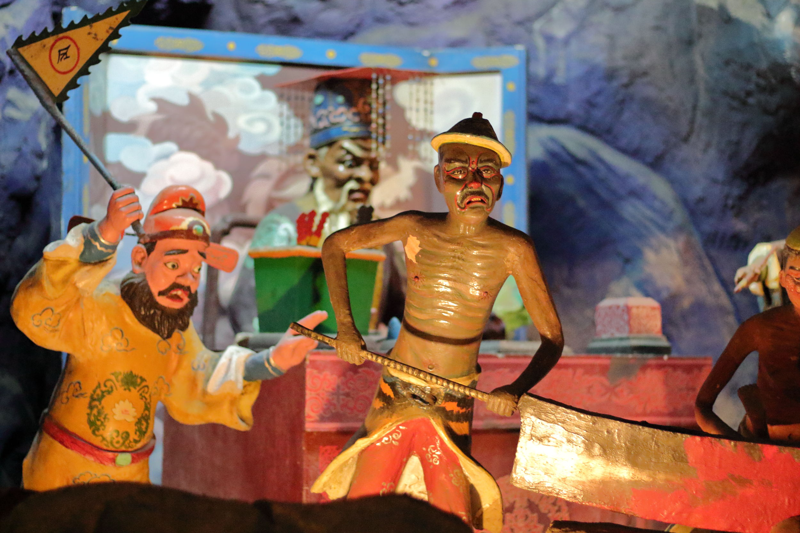
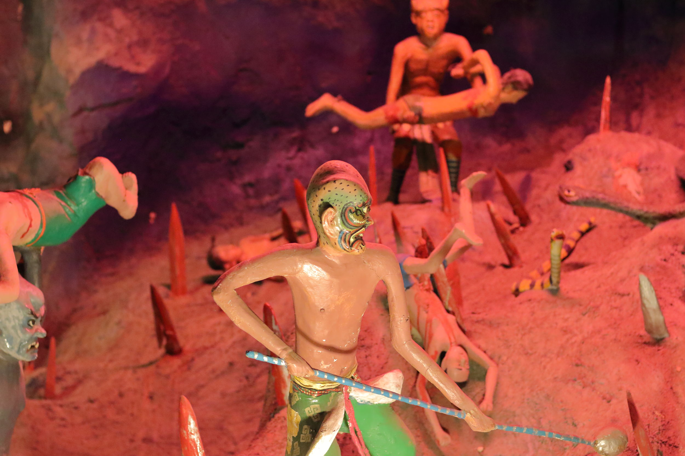
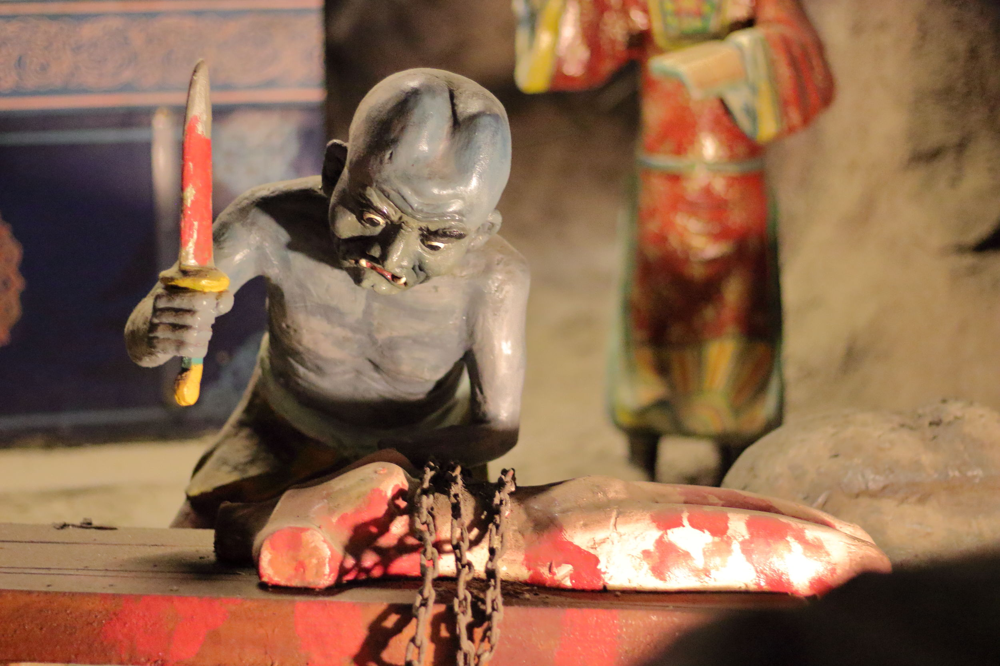
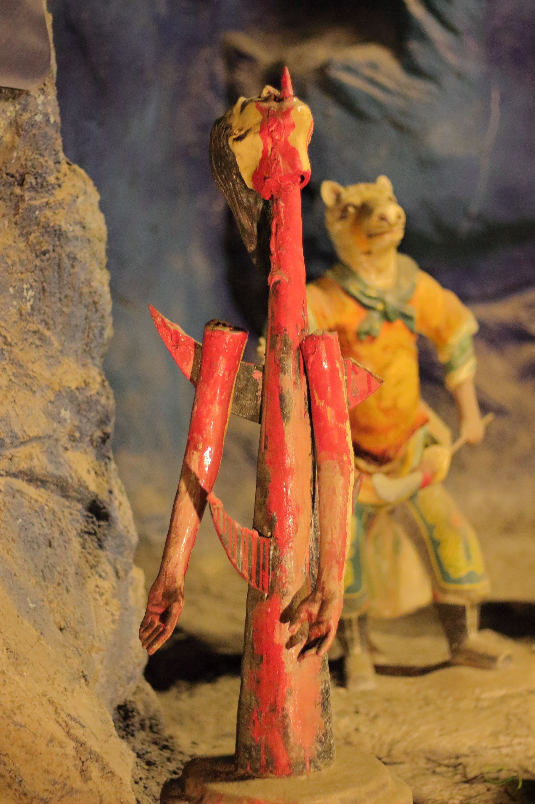
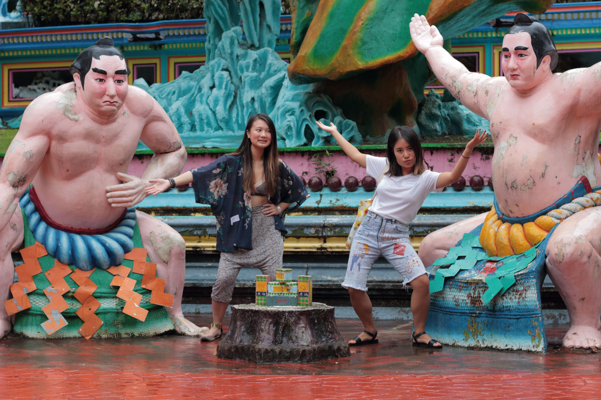

In the week before school started, there was plenty of events run by groups at NUS to familiarise international students with the campus and city. Overwhelmed by all the things going on and by how UTown has everything except for Wifi in bedrooms, I realise I have no photos of campus for an "a day in my new exciting exchange life" blog. So there is a lack of proper introduction, but as all my friends know, I have trouble sticking to timelines but maybe there needs to be none.
On one of the "kaki" buddy adventure days, where local students take a bunch of exchange students around, we went to Haw Par Villa and the Peranakan Museum, and ate a bunch of good food throughout the day. It was fun getting to know other exchangers and a special apology is owed to our local buddies, Wen Qi and Alex, whom Jenn and I tortured with taking photos and carrying our bags. I'm sorry for abusing your kindness.
Upon dying, you will judged for the conduct of your past life in the first court of hell. If your bad deeds outweight the good, you will be sent to further courts of hell to be punished. Parents take their young children to see, in order to inspire virtue in them:
   Do not worry, there is still justice in hell, and once you serve your time, you can drink tea to forget this lifetime and reincarnate. Outside, we keep taking silly photos everywhere while we are still young, touristy, and (partially) free from judgement:
